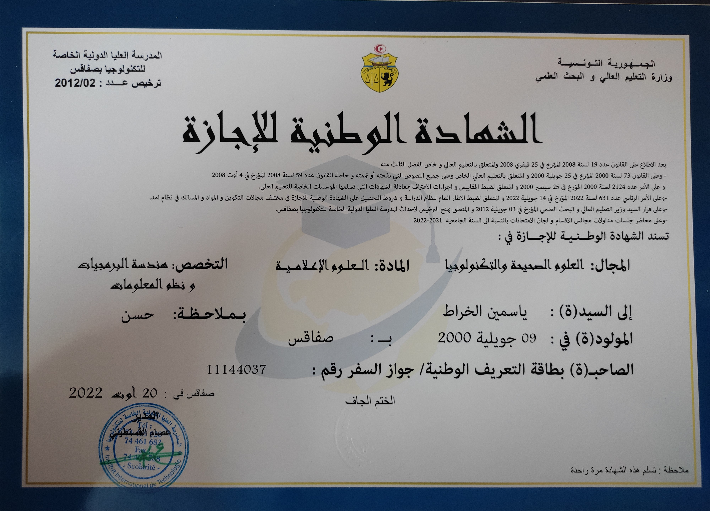

Au lycée, j'ai obtenu mon diplôme de baccalauréat en Science Expérimentale en 2019 puis j'ai contenu mon parcours académique à l'IIT qui m'a permis d'obtenir mon diplôme de Licence en Génie Logiciel Et Systèmes D'informations(GLSI) et maintenant je suis une étudiante en Génie Informatique
- 2019
- 2020 
Mes diplômes :
| Diplôme de Baccalauréat en Science Expérimentale | |
|
|
Diplôme de Licence en GLSI |